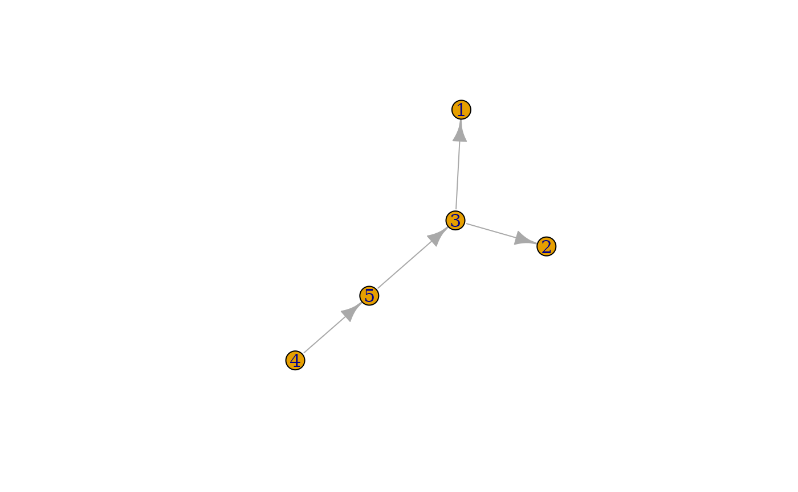

Glycan Graphs: The Network Behind Glycan Structures
Source:vignettes/glycan-graph.Rmd
glycan-graph.RmdThis vignette is for users who want to understand how
glyrepr stores glycan structures internally. Some
familiarity with graph theory and the igraph package will
help. If those concepts are new to you, the igraph documentation is a useful
companion reference.
Glycans as Graphs
Glycans are naturally represented as directed graphs. In
glyrepr, a glycan structure is stored as an
outward-directed tree, where each vertex represents a monosaccharide and
each edge represents a glycosidic linkage.
Behind the scenes, each glycan_structure() object is
backed by an igraph object. Most workflows can stay at the
glycan_structure() level, but the graph representation is
useful when you need custom structure analysis.
What Is Stored in Memory?
A glycan can carry many kinds of information: linear oriented C-atoms, basetype, substituents, configuration, anomeric center, ring size, linkage positions, and more.
Some packages, such as Python’s glypy, store a very
detailed glycan model. That comprehensive strategy is useful for
specialized tasks such as MS/MS spectra simulation, but it can be
overkill for everyday omics research.
glyrepr takes a more compact approach: if a feature can
be derived from an IUPAC-condensed text representation,
glyrepr stores it. Details such as configuration and ring
size are not stored directly, because they are often predictable for
common carbohydrates and are not needed for many glycomics
workflows.
For a closer look at IUPAC-condensed notation, see the IUPAC-condensed vignette.
Extracting the Graph
You cannot pass a glycan_structure() object directly to
most igraph functions. First, extract the underlying graph
with get_structure_graphs():
glycan <- n_glycan_core()
graph <- get_structure_graphs(glycan)
graph
#> IGRAPH ca3554d DN-- 5 4 --
#> + attr: anomer (g/c), name (v/c), mono (v/c), sub (v/c), linkage (e/c)
#> + edges from ca3554d (vertex names):
#> [1] 3->1 3->2 4->3 5->4The printed graph contains several pieces of information.
First line: Directed Named (“DN”) graph with 5 vertices (sugar units) and 4 edges (bonds).
Graph-level attributes:
-
anomer: the anomeric configuration of the reducing end.
Vertex attributes:
-
name: a unique ID for each monosaccharide. -
mono: the monosaccharide type, such as “Hex” or “HexNAc”. -
sub: chemical decorations attached to the monosaccharide.
Edge attributes:
-
linkage: how the monosaccharides are connected, including bond positions and configurations.
Connection pattern: “1->2” means vertex 1
connects to vertex 2. glyrepr treats bonds as arrows
pointing from the core toward the branches. The direction is a modeling
choice that makes traversal and structure operations easier.
You can also plot the graph with igraph:
plot(graph)
Graph Components
Vertices
Each vertex represents a monosaccharide with three key properties:
Names: These are auto-generated identifiers, usually simple integers, but they could be anything as long as they’re unique:
igraph::V(graph)$name
#> [1] "1" "2" "3" "4" "5"Monosaccharides: These are IUPAC-condensed names like “Hex”, “HexNAc”, “Glc”, “GlcNAc”.
igraph::V(graph)$mono
#> [1] "Man" "Man" "Man" "GlcNAc" "GlcNAc"For the full list of available monosaccharides, check SNFG notation
or run available_monosaccharides().
Substituents: Chemical decorations like “Me” (methyl), “Ac” (acetyl), “S” (sulfate), etc. Position matters. “3Me” = methyl at position 3, “?S” = sulfate at unknown position:
igraph::V(graph)$sub
#> [1] "" "" "" "" ""Multiple decorations are comma-separated and sorted by position:
glycan2 <- as_glycan_structure("Glc3Me6S(a1-")
graph2 <- get_structure_graphs(glycan2)
igraph::V(graph2)$sub
#> [1] "3Me,6S"Edges
Edges represent glycosidic bonds with a simple but powerful format:
<target anomeric config><target position> - <source position>Here is an example where “Gal” has an “a” anomeric configuration, linking from position 3 of “GalNAc” to position 1 of “Gal”:
glycan3 <- as_glycan_structure("Gal(a1-3)GalNAc(b1-")
graph3 <- get_structure_graphs(glycan3)
igraph::E(graph3)$linkage
#> [1] "a1-3"glyrepr stores anomer information in edges rather than
vertices. This follows the way linkages are written in IUPAC-condensed
notation, for example “Neu5Ac with an a2-3 linkage”.
Working with the Graph
Using igraph
Once you understand the graph structure, you can use
igraph functions for custom structure analysis.
Example 1: Count branched structures (sugars with multiple children):
Example 2: Explore the structure with breadth-first search:
bfs_result <- igraph::bfs(graph, root = 1, mode = "out")
bfs_result$order
#> + 5/5 vertices, named, from ca3554d:
#> [1] 1 2 3 4 5Using smap Functions
Working with multiple glycans? You could use purrr:
library(purrr)
glycans <- c(n_glycan_core(), o_glycan_core_1(), o_glycan_core_2())
graphs <- get_structure_graphs(glycans) # Extract graphs first
map_int(graphs, ~ igraph::vcount(.x)) # Then analyze
#> [1] 5 2 3For glycan structure vectors, glyrepr’s
smap functions are usually a better fit:
The main advantage of smap functions is how they handle
duplicates. Real datasets often contain many repeated structures, and
smap optimizes by processing unique structures once, then
efficiently expanding results back to the original dimensions.
The smap vignette covers this workflow in more detail.
Motif Analysis with glymotif
One important application is identifying biologically meaningful
motifs, or functional substructures. The glymotif package,
built on this graph foundation, specializes in exactly this task.
See the glymotif
introduction for examples.
Summary
In this vignette, you saw:
- how glycan structures map to directed graphs.
- what information is stored and what is deliberately omitted.
- how to extract and inspect the underlying graphs.
- how
igraph,smap, andglymotifcan build on this representation.
The graph representation might seem complex at first, but it’s this
solid foundation that enables all the sophisticated glycan analysis
capabilities in the glycoverse. Most users will not need to
manipulate the graph directly, but understanding the model makes it
easier to extend glyrepr when custom analysis is
needed.